Today's
Inbox
0 Tasks7-Day Completion Velocity
Volume of completed tasks over the past week.
Project Allocation
Distribution of completed milestones across workspace projects.
Break & Focus Adherence
Performance sync with today's scheduled recovery windows.
AI verification
Distraction Archive
Your saved distraction notes.
Choose your Cloud Bridge setup
Pick one way to set up the App Blocker and the bridge that turns it on and off.
Building the App Blocker
This macro monitors your device and immediately terminates distracting apps whenever tasks remain unfinished. Complete the checkpoints below.
Change which apps are blocked
- In MacroDroid → Macros, open your App Blocker macro.
- Tap its Application Launched/Closed trigger and choose Configure or Edit (wording varies by version).
- Keep Application Launched selected. Tick apps to add them, untick apps to remove them, confirm the selection and save the macro with the checkmark.
- When App Blocker is enabled, launch a selected app to check that it returns you to the home screen. A removed app should open normally.
Keep MacroDroid and the browser you use for Taskitator out of the blocked-app list so you can manage the setup. The Cloud Bridge does not choose or change blocked apps.
Open MacroDroid and tap the Macros tab on the bottom bar to open your macros list. Tap the floating + button (or select Add Macro from the home grid).
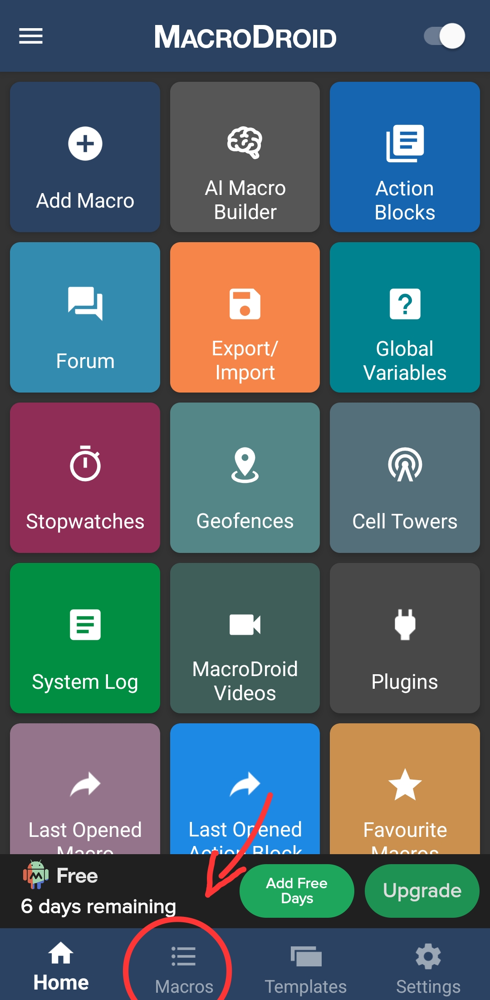
Fig 1: Tap Macros at the bottom bar to view and manage macros.Tap the top text field (#1) and enter the name App Blocker. Next, tap the + button on the red Triggers card (#2).
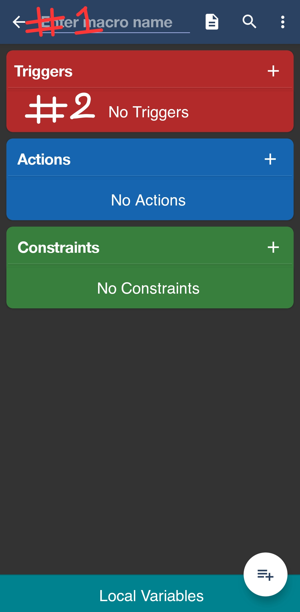
Fig 2: Enter App Blocker at (#1) and tap the red Triggers plus button at (#2).Select Applications → Application Launched/Closed. Choose Application Launched, then select all apps you want to restrict during work hours.
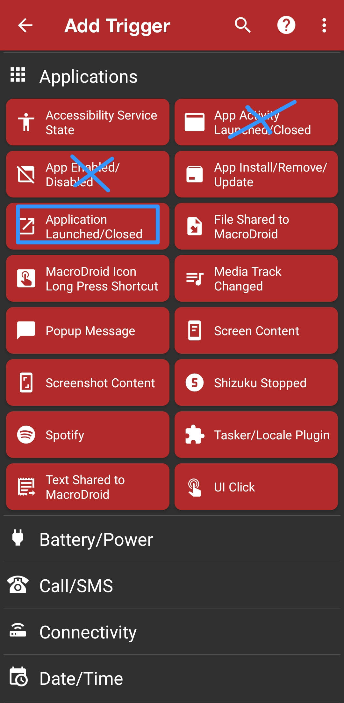
Fig 3: Tap Application Launched/Closed (ignore the crossed-out options).Tap the + button on the blue Actions card (#3) to add your block handlers.
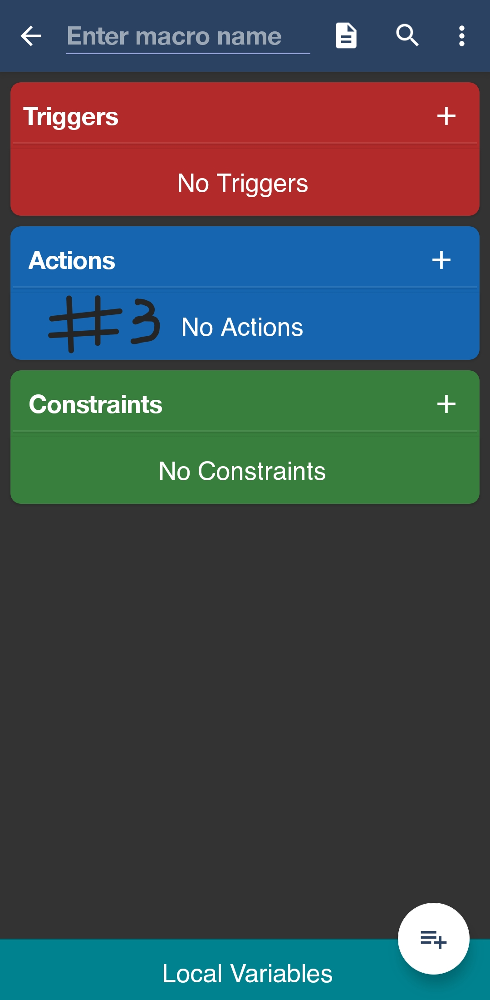
Fig 4: Tap the blue Actions plus button at (#3) to attach exit actions.The cleanest, most reliable way to kick yourself out of a blocked app without lag is the Launch Home Screen action. Search for launch home screen in the action search bar to locate it instantly.
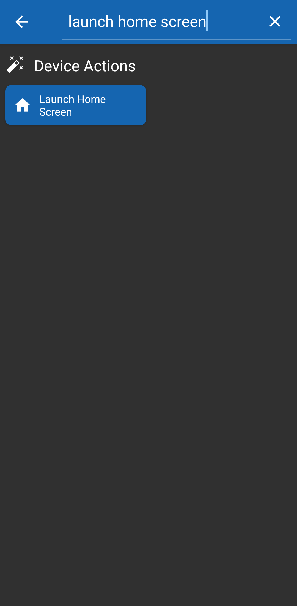
Fig 5: Under Device Actions, select Launch Home Screen.Review your complete action chain and commit the macro configuration.
• Device Actions → Launch Home Screen
• Notification → Display Pop-Up Message → "Tasks incomplete! Complete them first."
Import the macros
Two ready-made macros: App Blocker (blocks your chosen apps) and Taskitator Cloud Bridge (turns the App Blocker on and off from your tasks and Sleep Lock). Import the App Blocker first, then the Bridge. Do not rename the App Blocker; the Bridge finds it by that title.
↓ App Blocker ↓ Cloud Bridge (no token)
Faster: in Taskitator → Settings, create your phone token and press Download Bridge (with your token). That file already contains your token, so skip the token step below.
Install MacroDroid and find your way around
- Install MacroDroid from the Play Store and open it once. Grant the permissions it asks for (accessibility and notifications are needed for blocking).
- Import each macro (do this for both the App Blocker and the Cloud Bridge):
- Open MacroDroid and find the Import/Export section (in the side menu or the three-dots menu; the name varies slightly by version).
- Choose to import a macro, then locate the downloaded
.macroor.jsonfile (usually in your Downloads folder) and select it. - The macro opens for review. Press the three dots, then Save macro. The import is not complete until you save.
- Repeat for the second macro. Import the App Blocker first, then the Cloud Bridge.
- Open any macro from the Macros tab to see its triggers (red), actions (blue) and local variables (swipe up from the bottom). Save with the three-dots menu → Save macro.
1. App Blocker
- Import App_Blocker.macro. Default blocked apps: TikTok, Instagram, X (Twitter).
- To change the blocked apps, press the red Application Launched trigger and press Configure.
- Select Application Launched (leave the checkbox unchecked) and press OK.
- Choose Select Application(s) and press OK.
- Wait for the apps to load, then select every app you want blocked (you can search by name). Make sure Include is chosen, then press OK.
- Press the three dots, then Save macro. Save before closing, or the change is lost.
- Do not change the macro's title. The Bridge looks for "App Blocker".
2. Cloud Bridge
- Import the Bridge (the token-ready one from Settings, or the no-token one above).
- Only if you used the no-token file: swipe up the Local Variables drawer and select user token. Replace the value with your token from Taskitator → Settings. Tokens begin with
tkp_. Paste the token only, without the word "Bearer". - The Bridge checks every 5 minutes, when the screen turns on, and when MacroDroid opens. Keep these triggers.
- Make sure both macros are enabled. The Bridge then enables or disables the App Blocker for you.
| Server response | App Blocker |
|---|---|
device_locked = false | Off. Apps open normally. |
device_locked = true | On. Blocked apps return to the home screen. |
sleep = true | On (Sleep Lock). Overrides the line above. |
sleep = false | Follows device_locked. |
Working offline and syncing back
- The blocker follows the cloud, not your device. The Bridge reads your status from the Taskitator server. Tasks you complete while offline do not unlock your apps until this device reconnects and syncs.
- Edits merge automatically. When you reconnect, changes made on this device are merged with the cloud field by field (for example, a title edited here and a due date edited elsewhere both stay). Tags from both sides are kept.
- Only real clashes ask you. If the same field was changed differently on both sides, or a task was deleted on one side and edited on the other, a panel on this device asks you to pick This device or Cloud for each. Nothing is uploaded until you press Apply.
- "Decide later" is safe. Your offline edits stay on this device and the blocker keeps following the last cloud state. The panel returns on the next sync.
- Phone token and macros need no changes. The token and the Bridge keep working the same way. Creating or disconnecting a phone token needs a connection.
Sleep Lock: there is no separate sleep macro. The same App Blocker is used for both task blocking and Sleep Lock. Emergency Bypass turns both off.
Not working?
- Import fails: update MacroDroid and pick the actual
.macrofile, not an HTML page. - 401 / Unauthorized: the token is wrong, empty or was replaced. Create a new one in Settings and download the Bridge again, or paste it into user token.
- UnknownHostException: a connection error. Check your internet.
- Bridge runs but nothing blocks: check the App Blocker is enabled, was imported before the Bridge, still has the title "App Blocker", and its trigger lists your apps.
Questions? Ask the Taskitator assistant or email info@mazendev.com. See also MacroDroid's import/export overview.
Building the Cloud Bridge
Manual alternative: build the Cloud Bridge from scratch with the checkpoints below. If you imported and configured the download above, skip this section; do not create a second bridge.
Access MacroDroid's global variable storage from the main menu.
 Ph2_S1: Main menu global variables tile
Ph2_S1: Main menu global variables tile
Create a dedicated string variable to hold Taskitator's lock status response text.
 Ph2_S2: Enter variable name and set type to String
Ph2_S2: Enter variable name and set type to String
Configure the polling interval so MacroDroid repeatedly checks the task server in the background.
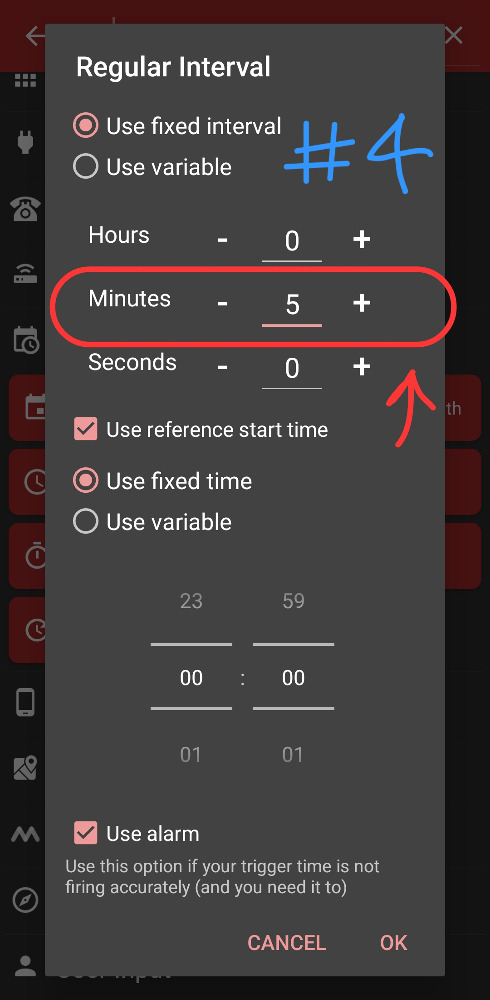
Ph2_S3: Configure 5 minutes regular intervalConfirm trigger configuration and proceed to the macro action sequence.
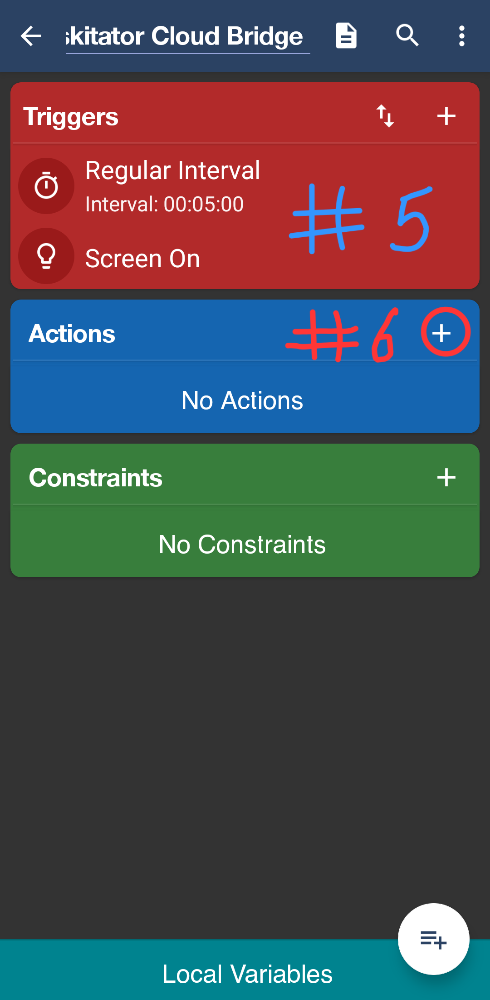
Ph2_S4: Confirm triggers and tap Actions plusLocate the web interaction action inside the MacroDroid library.
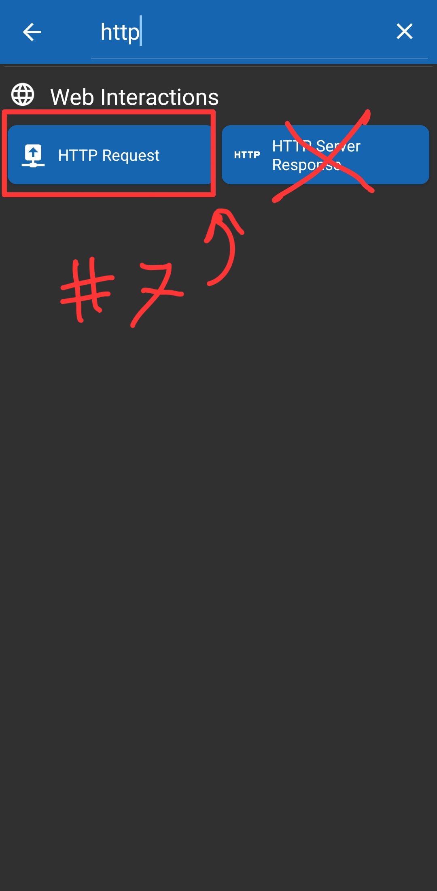
Ph2_S5: Search http and pick HTTP RequestSet up the endpoint details and enforce synchronous execution.
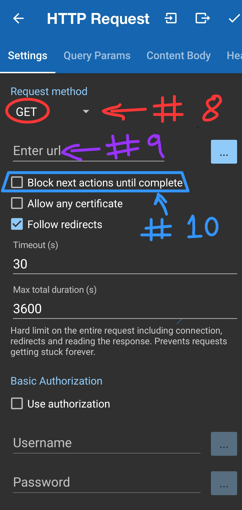
Ph2_S6: Set GET, paste URL, and check block until completeOpen the headers configuration tab inside the HTTP Request screen.
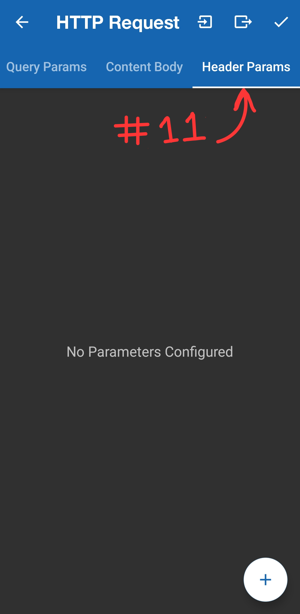
Ph2_S7: Tap Header Params tab and click +Add the Bearer token to authorize requests with your Taskitator sync engine.
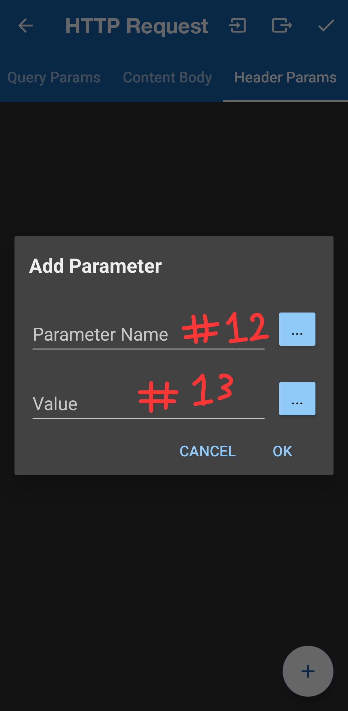
Ph2_S8: Enter Parameter Name and Token ValueCapture the HTTP response text into your global variable.
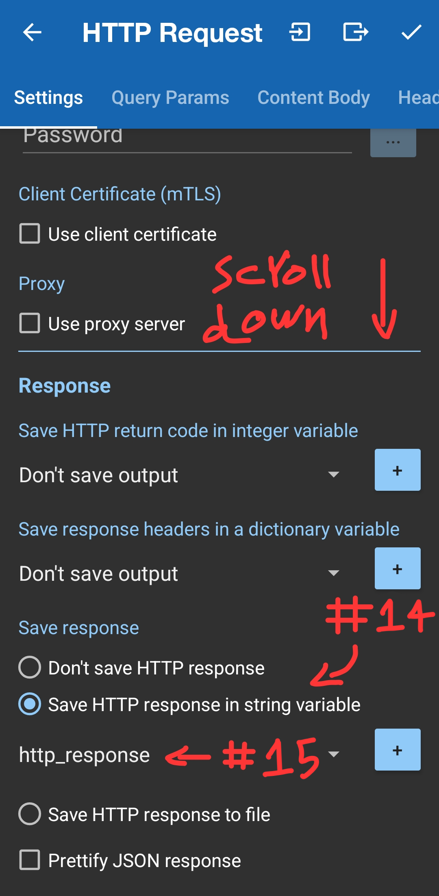
Ph2_S9: Check save to string variable and pick http_responseBegin the decision logic structure in the actions list.
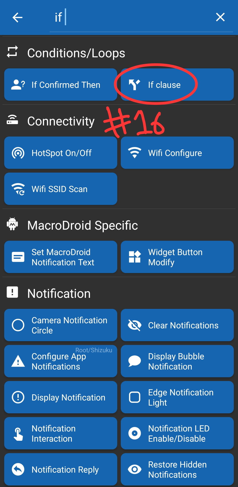
Ph2_S10: Conditions/Loops → If clauseAttach a variable comparison test to the condition statement.
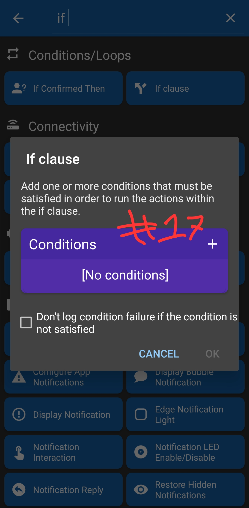
Ph2_S11: Tap plus inside Conditions boxChoose to test against a saved variable.
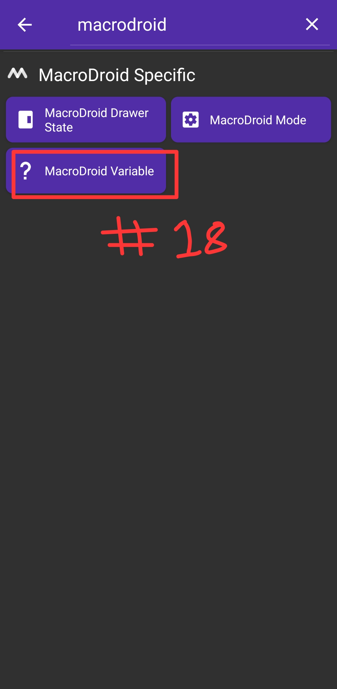
Ph2_S12: Select MacroDroid VariableCheck if the server explicitly confirmed the device is unlocked.
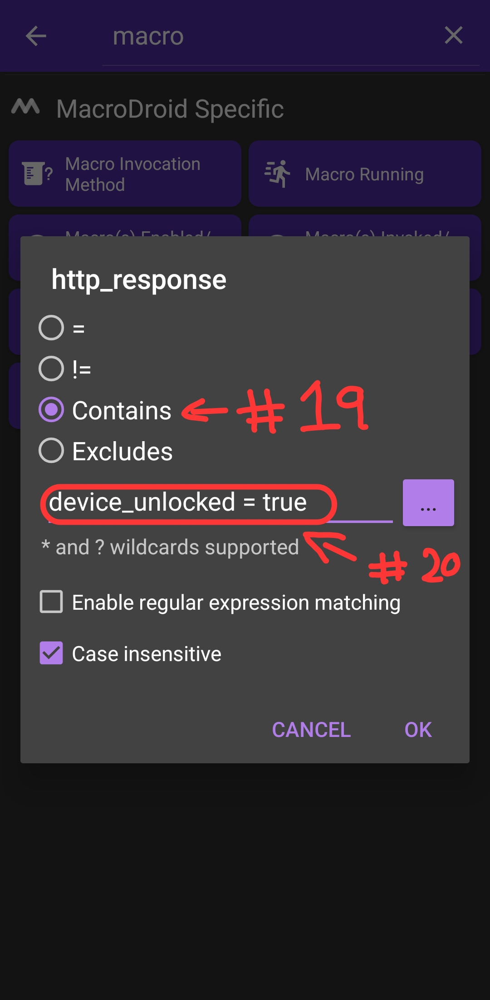
Ph2_S13: Set Contains device_locked = falseProvide the fallback branch for when tasks are unfinished.
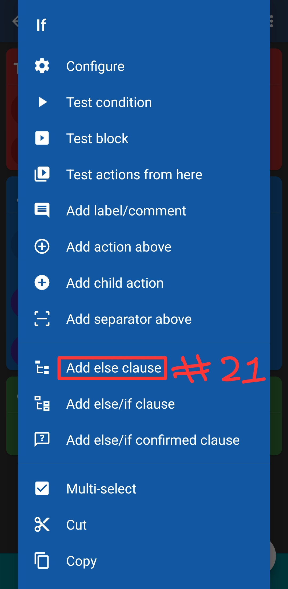
Ph2_S14: Context menu → Add else clauseGenerate the commands that toggle your App Blocker macro state.
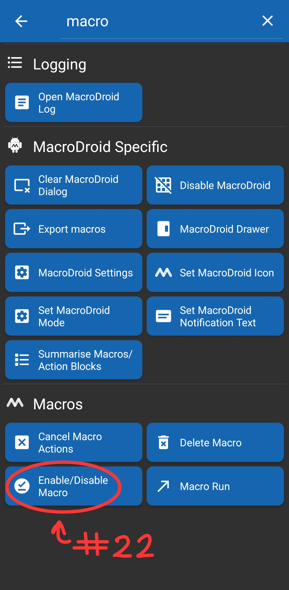
Ph2_S15: Select Enable/Disable MacroReposition newly created actions into their respective If / Else branches.
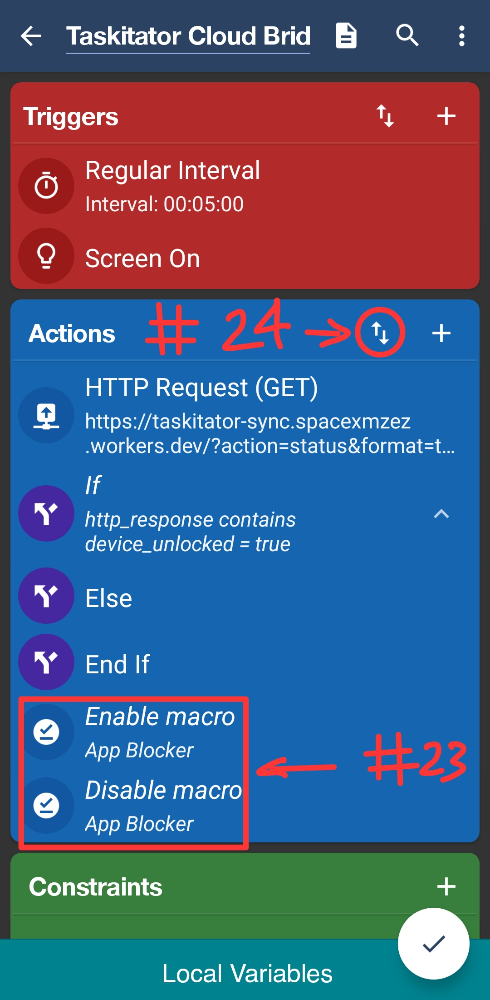
Ph2_S16: Tap the reorder arrows button (⇅)Nest the actions correctly inside the conditions and commit the macro.
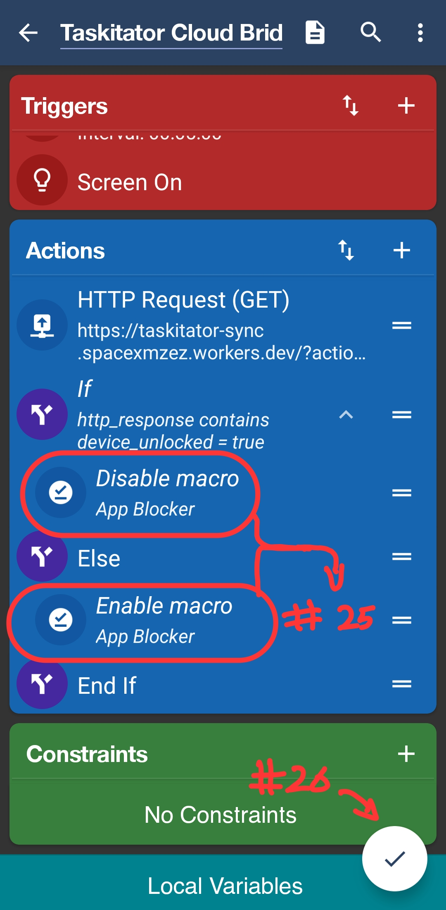
Ph2_S17: Final tree hierarchy and commit buttonStudy plans
See the plans created by study recurrence, change their names and priorities, add AI criteria, or delete them.
Unfinished study plans: new plans from the study recurrence dialog and unsaved edits of existing plans. Nothing here is created or applied until you restore it and save. Up to 10 drafts.
Previous plans
No study plans yet. Use the New study plan button to create one.
Sleep LockFirm
Sleep Lock settings
Set up MacroDroid first. Sleep Lock can’t block your phone until a phone token is connected. Create a token in Settings, then import the Cloud Bridge.
Your daily sleep schedule uses Riyadh time (UTC+3), even when you travel.
Delay sleep for today
Postpone your saved bedtime by 30 or 60 minutes, once per night across all devices. Wake-up time stays the same. An overnight schedule uses the date its bedtime starts, so midnight does not give you another delay. Other task locks still apply.
Firm mode: delays are only available until 2 hours before bedtime, so plan ahead. From then on, delaying needs an Emergency Bypass.
Loading saved schedule…
دليل المساعدة متاح باللغة الإنجليزية حاليًا. الترجمة العربية قادمة.
Taskitator Help
How to use each feature. Tap Show example under any section to see one.
Unit 1 · Free features
Available to every account.
Today and General Tasks
Today is your committed list. General Tasks is everything.
- Open Today from the menu (☰). It lists tasks that are due today or overdue.
- A task with no due date never appears on Today. Give it a date to commit to it.
- When a dated subtask sits under undated parents, it shows on Today with a small path above it (for example School › Biology). The parents stay hidden. The task keeps its own subtasks.
- Open General Tasks from the menu to see every task in its normal hierarchy.
- The day rolls over at the time set in Settings → Day & week. Anything you do before that time counts toward the previous day.
A dated task under a dated parent shows inside the parent, not twice.
Show exampleHide example
Today shows Research with the path School › Biology above it. School and Biology do not appear. General Tasks still shows School.
Create and edit a task
Tap + New task (the + button).
- Fill in Task Title. Description, Project, Priority, Tags and Due Date are optional.
- Tags: type one and press + Add. You can add several.
- The Due Date starts as today only when you create from the Today view.
- Tap Save Task.
- To change a task later, tap it to open Task Details, edit, then Save Changes.
- To move a task under another one, use Hierarchy / Parent Task in Task Details. Its subtasks move with it.
Tag and priority choices are managed in Settings → Tasks.
Show exampleHide example
Drafts
Park an unfinished task and come back to it. A draft is not a task: it does not appear on Today, count as overdue or affect your phone lock.
- New task: fill in whatever you have and press Draft. Only the title is required. Nothing is created or locked and no AI is used.
- Open the menu (☰) and tap Drafts. Press Open to refill the form, or Delete to remove the draft.
- Press Save Task on an opened draft to publish it. The draft is removed. Pressing Draft again updates the same draft.
- Existing task: in Task Details press Draft to keep your edits without changing the task. When you open that task again a notice offers Restore or Discard draft. Save Changes removes the draft.
- Restoring only fills fields you are allowed to change. A locked or shielded task keeps its restrictions.
- Drafts sync with your account and are included in backups. You can keep up to 50 new-task drafts.
A draft stores the title, description, due date, project, priority, tags, bonus, shield, AI proof choice, criteria text, Mr. Study fields, Dynamic Priority choice and the subtasks you typed. It does not store the reference file, the criteria validation score (validate again before publishing) or the repeat schedule. Edit drafts do not include subtask changes.
An AI proof choice is only locked when you publish, and its confirmation appears then.
Show exampleHide example
Subtasks, Shield and Bonus
Break a task into steps and decide whether the steps are required.
- In Create Task or Task Details, type a step in Quick Subtasks and press + (or Enter).
- Turn on Require all subtasks first (Irreversible Shield) to stop the parent being completed until every required subtask beneath it is finished. It cannot be undone.
- Mark a subtask Bonus Subtask to exclude it from the Shield. A bonus never blocks its parent.
- To flip several tasks at once, use Multiselect → Bonus and choose Make required or Make bonus. Tasks that cannot change (shield-protected required work) are skipped.
The Shield is irreversible: you cannot switch it off afterwards.
Show exampleHide example
You can complete Finish report once Draft and Edit are done, even if the cover page is not.
☑ Multiselect and batch actions
Change many tasks at once.
- Tap ☑ Multiselect, then tick tasks. All selects everything shown.
- The bar offers Tags, Priority, Due, Bonus, Delete and Batch review selected tasks.
- Tags replaces the current tags on every selected task.
- Due date: overdue AI-locked tasks are guarded against postponement.
- Delete shows Apply · delete N; nothing is deleted until you press it.
Show exampleHide example
Filter and sort
Narrow or reorder what you see.
- Tap Filter. Choose Projects, Priorities and Tags, then Apply Filters. Parent tasks of matches stay visible for context. Clear All resets.
- Tap ⇅ to sort by Priority, Alphabetical, or Required, then priority.
- Numbers inside titles are compared as numbers, so Chapter 2 comes before Chapter 10 when sorting alphabetically.
Show exampleHide example
Overdue tasks
The banner at the top of Today counts overdue tasks.
- The banner offers Reschedule to date…. Pick a Target Due Date and press Reschedule Tasks.
- This moves eligible, non-locked overdue tasks in bulk.
- If you have active AI-checked tasks that are past due, rescheduling non-AI tasks is blocked. Complete or roll over the overdue AI tasks first.
Show exampleHide example
Projects
Group tasks. Every account has an Inbox.
- Open Projects from the menu. Tap the + chip to create one: name, icon and theme color, then Save Project.
- Tap a project chip to switch to it. Tap ✎ to edit the active project (the Inbox cannot be edited).
- Deleting a project asks what should happen to its tasks: divert to Inbox, reassign to another project, or delete all tasks with it.
Show exampleHide example
↻ Repeating tasks
Make a task and its subtasks come back on a schedule.
- When creating, set Repeat. Or open a task's details and press Set up recurrence (only an active task can start repeating).
- Options: Daily, Selected weekdays, Monthly (start-date day), Date of month, Every six months, Yearly.
- Set a Start date and an optional End date.
- A subtask follows its parent's schedule. A repeating branch cannot contain another repeating series.
- On a repeating task, Apply ordinary task edits to lets you pick This occurrence or This and future occurrences. Due-date changes apply to this occurrence only. Use Recurrence & future criteria to change future dates or requirements.
- If you stop repetition you can still finish the current task.
Show exampleHide example
Calendar, Statistics and Trash
Three views in the menu.
- Calendar: month grid with an Agenda for the selected day, plus an Unscheduled Tasks list.
- Statistics: Done Today, Pending Today, Rigor Ratio, Active Total, 7-day completion velocity, project allocation, break adherence, and AI Verified vs Standard Done.
- Trash: deleted tasks. To remove finished and trashed tasks permanently, use Settings → Account & data → Clear completed & trash.
Show exampleHide example
Daily breaks
Tap the break pill ( Breaks) to open the panel.
- You get 3 hours of breaks per day, shared by two systems. The maximum can be lowered in Settings → Day & week.
- Each day you use one system. Once you pick one, the other is locked until the day resets.
- Scheduled: press start planning. You get 10 minutes to enter up to 3 non-overlapping breaks within the allowance. Saving locks Scheduled for today; closing without saving cancels.
- Flexible: pick 30 min, 45 min, 1 hour, a custom length, or until your allowance ends. It starts immediately. You cannot end it in its first 10 minutes (or your strict minimum).
- Every started minute counts: 30 minutes 1 second uses 31 minutes. A break never continues into the next day.
- Optional Strict modes are in Settings → Day & week.
Show exampleHide example
Emergency bypass
For real emergencies only.
- Tap Emergency bypass and confirm.
- It lifts restrictions for 15 minutes and unlocks editing and deleting of protected tasks.
- You get 4 per week. They refill after your weekend. Set weekend days in Settings → Day & week.
- It is separate from breaks: it never ends a break or changes your break allowance.
Show exampleHide example
Scratchpad (Distraction Dump)
Park a distracting thought and return to work.
- Tap Scratchpad. A timer starts (default 90 seconds; set 30s–5m in Settings → General).
- Write the thought, then press Dump & Return. It also saves when the timer ends.
- Notes expire after 48 hours.
- View notes is locked until you complete, move or trash required tasks due today or overdue.
- In the notes view you can export as .txt or .md, or delete all.
Show exampleHide example
AI proof verification (your own key)
Require proof before a task can be completed. Needs an AI key (see next section) or Pro.
- In Create Task or Task Details, turn on Require AI Proof Verification (Irrevocable). It cannot be turned off afterwards.
- Write Proof Criteria: what the proof must show. Press Validate Criteria. With the strict setting on (Settings → Tasks) criteria must score 7/10 or higher before the task can lock.
- Recommended opens templates and your saved criteria. Saved criteria need 8/10 or higher; the limit is 6.
- Optional: Attach Reference Exemplar (1 file, up to 5 MB, image or PDF) when the proof must match an example.
- To complete the task, submit proof: 1–5 files, 8 MB per photo or 30 MB per PDF, plus an optional note. Proof and reference exemplars together can total up to 40 MB per review. The AI scores it; 7 out of 10 passes.
- Submitting consumes AI usage even if the proof is rejected. There are no refunds.
- Test your criteria (before the task is locked): upload a sample proof and see how the auditor reads your criteria. It runs the same audit as a real proof but saves, completes and locks nothing. It needs 7/10 validation first when strict is on, and costs AI usage like a real audit. Once a task is locked, tests are unavailable unless Emergency Bypass is active.
A passing test does not guarantee the real audit passes. AI verdicts can vary.
Show exampleHide example
Set up AI with your own key
Copilot, criteria checks, proof reviews and note extraction need a key on Free.
- Open Settings → AI & Pro.
- Choose a Provider: Gemini or Claude. Each keeps its own key, so switching never erases one.
- Press add key and paste a key from Google AI Studio (Gemini) or the Claude Console. You confirm with your password or Google first. Keys are encrypted on Taskitator's server.
- Press Test key. It checks the key works and uses none of your quota.
- Press the button that makes the selected provider the active one.
- Free accounts have a daily and monthly allowance for AI through your key. The card in Settings shows it as Available, Caution or Critical.
Show exampleHide example
Copilot
Chat with an assistant that can plan, reschedule and review your tasks.
- Tap Copilot ( / ). Press Start Conversation and send a message.
- It needs an AI key on Free. On Pro it works without one.
- You can rename it in Settings → General → Copilot → Name (up to 20 characters).
Show exampleHide example
Phone lock (MacroDroid)
Android only. MacroDroid blocks distracting apps until today's tasks are done.
- Open Settings → Phone lock → Open guide and follow it. Do it once.
- Name your device and press Add device. Its token starts with
tkp_. Free accounts connect up to 3 devices, Pro accounts up to 12; if Pro ends, only the first 3 keep working until you renew. - Press Download Bridge (with your token) and Download App Blocker. In MacroDroid import the App Blocker first, then the Bridge, and save each.
- Do not rename the App Blocker: the Bridge finds it by that title. Keep MacroDroid and your browser out of the blocked list.
- The Bridge checks every 5 minutes, when the screen turns on and when MacroDroid opens. Apps unlock when the server says the device is unlocked.
- You can only change phone settings when today's tasks are done, during a break, or while Emergency Bypass is on.
- Tasks completed offline do not unlock your phone until this device syncs.
Show exampleHide example
↻ Sync, backup and account
Where your data lives.
- The dot near the top shows sync: gray = this device only, yellow = waiting to sync, green = up to date, red = failed or offline. Force Sync Now sends changes immediately.
- If two devices changed the same field differently, a panel asks you to pick This device or Cloud for each. Nothing is uploaded until you press Apply.
- Settings → Account & data → Download a backup saves a .json file. To restore choose Merge (adds, deletes nothing) or Replace everything.
- Clear browser, clear completed & trash and Delete account are in the Danger zone. Download a backup first.
Show exampleHide example
Unit 2 · Pro features
Require Taskitator Pro.
◆ Hosted AI (no key needed)
On Pro, Copilot, criteria checks, proof reviews and notes use Taskitator AI automatically.
- Nothing to set up. Open Settings → AI & Pro to see your plan and remaining credits.
- Prefer your own Gemini or Claude key? Switch to it in the Pro section. Switching does not reset your hosted credits.
- Your allowance comes from your Pro license, with a daily limit and a 30-day cycle limit. Daily limits reset at midnight Asia/Riyadh.
The exact numbers on your account are shown in Settings.
Show exampleHide example
How credits are charged
Every charge is rounded up to the next 0.5 credit.
- Before a review runs you see a price preview. A temporary maximum is held; unused held credits return.
- You pay the real cost of the review. There is no multiplier for reference exemplars and no batch discount.
- Reviewing several tasks together is one combined request, so it usually costs less than reviewing them one by one.
- If the verdict is insufficient proof (legitimate but needs another page or clearer photo) you are charged half the real usage, rounded up to the next 0.5.
- Tap View details to see usage to 4 decimals.
Show exampleHide example
Batch proof review
Review several AI-locked tasks together.
- Tap ☑ Multiselect, tick the AI-locked tasks, then Batch review selected tasks.
- You can include up to 20 tasks per batch.
- Attach 1–5 files (8 MB per photo or 30 MB per PDF).
- You pay the real cost of the combined review. Check the price before you start.
Reviewing several tasks together usually costs less than reviewing them one by one.
Show exampleHide example
Consecutive subtasks {num==X}
Fast numbered subtasks.
- In Create Task or Task Details, tick Consecutive {num==X} by Quick Subtasks.
- Type a subtask containing
{num==1}and press Enter. The number advances each time. - Without Pro, add subtasks one by one. Existing numbered subtasks stay intact.
Show exampleHide example
{num==2}, Enter again → {num==3}.Dynamic Priority
Lower a task's priority while only bonus work is left.
- In Create Task or Task Details open the Dynamic Priority section.
- Under While only bonus work remains, use priority choose a level.
- The task takes that priority while only bonus subtasks are unfinished, and returns to normal automatically if required work becomes unfinished again.
Show exampleHide example
Study plans
Spread study units over days. Ask Copilot to create one.
- Tell Copilot you want a study plan. It asks for a title, the total number of units and your study days.
- It opens an editable preview before anything is created.
- Study plans require Pro. Without Pro Copilot tells you so.
Missed days: on Study plans an overdue plan shows Soft reschedule (Pro) and Move overdue to today. Soft reschedule hands the overdue units out one at a time over the coming study days, so no day loses units and the plan stays in order; once a day for each plan. Move overdue to today is free and stacks them on today.
Smart Study is also included with Pro. Its instructions are not yet in this guide.
Show exampleHide example
🌌 Universe
A shared workspace for a group. Open it from the menu.
- Tabs: My dashboard, Projects, My stats, Controls (managers) and Settings. Needs an internet connection; changes are not queued offline.
- Your tasks are grouped by Overdue, Today, Upcoming, No date and Complete. A task moves through Open → Submitted → In review → Approved or Needs changes (fix and resubmit).
- Managers create work with ＋ in Projects and manage People, Invitations (single-use links that reserve a seat) and Labels in Controls.
- Limits: up to 20 members besides the owner, 2 Universes you own. You can join 2 Universes on Free or 7 on Pro.
Show exampleHide example
Test your criteria on hosted AI
Same as the Free test, but paid in credits.
- Press Test your criteria. You see a credit estimate before it runs.
- Charged exactly like a real audit; there are no free tests.
Show exampleHide example
Getting Pro
Tap Want Pro? Contact developer now! in Settings → AI & Pro to email the developer.
- If you already have a code, enter it in Activate a code in Settings → AI & Pro.
- Press Compare plans to see Free and Pro side by side.